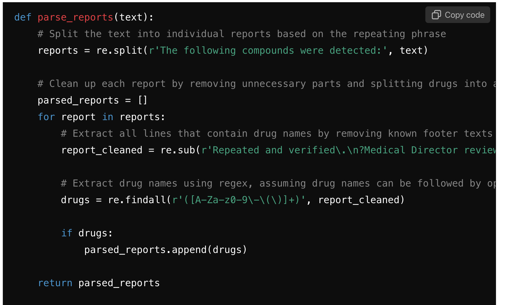

Empowering Medical Professionals
Leveraging GPT Models for Informatics Solutions
2024-10-02
Financial Diclosures
I have no financial disclosures and no conflicts of interest to declare.
AI Hootenanny
Pervasive Hype
- focus is on heralding future innovation
- my Natural Language Processing(NLP) professor around 2018 lamented that his work seems to follow him home in the news
- will reshape our daily lives - similar to industrial revolution - eventually reaches “Singularity” - potential to “transform healthcare”
Sparse Real-World Problem Solving
- “in the wild” either doesn’t happen or isn’t talked about
- Can anyone think of any examples where AI could maybe be applied?
Like Most Prophecies, ‘AI Forcasts’ are Hardly Actionable
- What should I do?
- When should I do it?
A Timeline for AI
Objectives
outline
- Outline the mechanisms by which AI adapts and accelerates real world workflows today (from my tenor as a pathology resident)
- Explain conceptually: how to anticipate when AI will be useful to apply to a particualr circumstance.
- Demonstrate “hands-off” informatics implementation of AI solutions, also made possible by AI.
- Give a Theoretical Basis: why proficiency in ai-tools (in-principle) should be (a) empowering and (b) eventually universal, vis-a-vis literacy
- Introduce Diagramatically a classification system for AI-Application facilitating computer-tasks.
- Automate Call Log Entry via an AI Application. ::: { .smaller .indent=2em}
- if time, show how an AI agent can be used to append, modify, save, query, analyze past log-entries.
- if time, show easy integration with downstream informatic-endpoints e.g. email notification for impending sample expiration, ai entry summarization and report generation.
Calibrating Perceptions of Informatics: a prerequisite to discussing change
What is Informatics to You
- baseline status quo ante AI
- perceptions vary

honest impressions, 2012
Informatics is Hard for Everyone
Always has been
the terminal
- intimidating, unforgiving, powerful
Previous approach
AI aided approach
Gene Panels, Spot the Difference
Gene Panels, Spot the Difference
“Just Autocomplete”
A Slippery Slope
| Text Autocomplete | -> next word |
| Language Translation | |
| Information Transformation | - data representation <-> (img, txt, code.py) |
| -> board material -> podcast discussing it | |
| Instruction Implementation | goal -> code achieving goal |
WUSTL Weekly Biogram Report Analysis
data from https://diorama.wustl.edu/weekly-report
Weekly WUSTL Biogram
LLM-Driven Data Slicing (1/3)
LLM-Driven Slicing (2/3)
LLM-Driven Slicing (3/3)
LLM-Driven Data (?)Dicing
Intermission
Why Should I Talk to Computers? How is that empowering?
Communication Critical for Humans
- Children Universally Geared toward learning language
- Why?
- tool for learning
- exploring feasibility
- coordinating resources
- accomplishing goals
Communication Critical in the Workplace
- Doctors - Patient Bedside
- Multi-Diciplinary Care Teams
- Blood Bank

Communication is Empowering
| Benefit | Communication Example |
|---|---|
| Economies of Scope | - enlisting adults - Multi-disciplinary - learning from data |
| Economies of Scale | - cooperation - minimum staffing, redundancy - automating tasks |
Communication Key to Efficiency
AI may result in removal of virtually all workflow inefficiencies
By lowering the barrier working with computers, and by expanding the pool of practitioners who can do so, AI stands to remove essentially all present workflow inefficiencies –>
everything is worth the squeeze when you have a juicer
Overview of Current Tools / Computer-Communication Aids
AI Tools For Computer Use
task to code (by hand)
task as prompt
task to code
code as prompt
Running Data Example: UDS Parse
Task: parse UDS screen results for positive patient+drugs resulted
SCREEN_RESULT_COMMENT
“The following compounds were detected:
Tetrahydrocannabinol (THC)
Repeated and verified. Medical Director review to follow.” “The following compounds were detected:
Tetrahydrocannabinol (THC)
Repeated and verified. Medical Director review to follow.”
“The following compounds were detected:
Benzoylecgonine (BEG) Fentanyl Tramadol O-Desmethyl tramadol Repeated and verified. Medical Director review to follow.”
“The following compounds were detected:
Amphetamine Methamphetamine Alprazolam (Xanax) Lorazepam-glucuronide
Repeated and verified. Medical Director review to follow.”
“The following compounds were detected:
Morphine Morphine-3-glucuronide Fentanyl
Repeated and verified. Medical Director review to follow.” “The following compounds were detected:
Tetrahydrocannabinol (THC),
Repeated and verified. Medical Director review to follow.” “The following compounds were detected:
Oxycodone,
Repeated and verified. Medical Director review to follow.”
“The following compounds were detected:
Amphetamine
Methamphetamine . . .
1. Task as Prompt
- try chatgpt directly
- clearly feasible
- difficult to specify what I mean precisely enough
0. Task to Code (by hand)
code to parse UDS screen results for positive patient+drugs
def parse_section(section: str) -> list[str]:
"""Parses a section of the screen result for detected compounds."""
start = section.find("detected:")
end = section.rfind("Repeated")
lines = section[start + len("detected:") : end].strip().split("\n")
compounds = [l.strip() for l in lines if l.strip()]
return compounds
results_file = Path( "screen_result.txt" )
result_text = results_file.read_text()
sections = result_text.split('"')[1::2]
parsed_sections = [parse_section(section) for section in sections]
print(*parsed_sections, sep='\n--------------------\n')!“overly specific”, hyper granular, brittle
['Tetrahydrocannabinol (THC)']
--------------------
['Tetrahydrocannabinol (THC)']
--------------------
['Benzoylecgonine (BEG)', 'Fentanyl', 'Tramadol', 'O-Desmethyl tramadol']
--------------------
['Amphetamine', 'Methamphetamine', 'Alprazolam (Xanax)', 'Lorazepam-glucuronide']
--------------------
['Morphine', 'Morphine-3-glucuronide', 'Fentanyl']
--------------------
['Tetrahydrocannabinol (THC),']
--------------------
['Oxycodone,']
--------------------
['Amphetamine', 'Methamphetamine']
--------------------
['Amphetamine', 'Methamphetamine']
--------------------
['Cocaine', 'Benzoylecgonine (BEG)', 'Fentanyl', 'Ketamine']
--------------------
['Nordiazepam,']
--------------------
['Oxycodone', 'Lorazepam-glucuronide', 'Tetrahydrocannabinol (THC)', 'Fentanyl']
--------------------
['Methadone', 'Fentanyl']
--------------------
['Tetrahydrocannabinol (THC)', 'Fentanyl']
--------------------
['Tetrahydrocannabinol (THC)']
--------------------
['Hydrocodone']
--------------------
['Oxycodone']
--------------------
['Methadone,', 'EDDP (Methadone Metabolite),', 'Fentanyl,']
--------------------
['Tetrahydrocannabinol (THC),']
--------------------
['Amphetamine,']
--------------------
['Benzoylecgonine (BEG)', 'Tetrahydrocannabinol (THC)']
--------------------
['Methadone', 'EDDP (Methadone Metabolite)', 'Fentanyl']
--------------------
['Tetrahydrocannabinol (THC)', 'Oxycodone', 'Hydrocodone']
--------------------
['Methadone', 'EDDP (Methadone Metabolite)', 'Bupropion', 'Hydroxy-bupropion']
--------------------
['Tetrahydrocannabinol (THC)']
--------------------
['owing compounds were detected', 'Tetrahydrocannabinol (THC)']
--------------------
['7-aminoclonazepam']
--------------------
['Amphetamine,', 'Methamphetamine,', 'Tetrahydrocannabinol (THC),', 'Oxycodone']
--------------------
['Methamphetamine']
--------------------
['Amphetamine,', 'Methamphetamine,', 'Morphine,', 'Morphine-3-glucuronide']
--------------------
['Amphetamine']
--------------------
['Venlafaxine(Effexor)']
--------------------
['Cocaine,', 'Benzoylecgonine (BEG),', 'Oxycodone,', 'Fentanyl']
--------------------
['Benzoylecgonine (BEG),', 'Tetrahydrocannabinol (THC),', 'Methadone,', 'EDDP (Methadone Metabolite),', 'Fentanyl']
--------------------
['Amphetamine,', 'Methamphetamine']
--------------------
['Amphetamine,', 'Methamphetamine']
--------------------
['Lorazepam-glucuronide.']
--------------------
['Benzoylecgonine (BEG)']
--------------------
['Lorazepam-glucuronide.']
--------------------
['Methylphenidate (Ritalin)']
--------------------
['Lorazepam-glucuronide.']
--------------------
['Clonidine']
--------------------
['Tetrahydrocannabinol (THC)', 'Norbuprenorphine']
--------------------
['7-aminoclonazepam']2. Task to Code
uds_parse/drugscreen_result_parsing.ipynb
3. Code as Prompt
Coding without Rigid Rules
AI Tools For Computer Use (summary)
- task to code (by hand)
- tedious, “too literal”: always requires 100% specification
- task as prompt
- easy, difficult to specify what you mean precisely enough
- task to code
- Can jumpstart coding, modifying easier than writing
- code as prompt
- sweet spot: clearly specifies what you want the output to “look like” while leaving the details to the model
Quick Development of Informatic Solutions
Flow lab dashboard
Txfsn Service AI Assistant
Recommendations
AI Recommendations Frameworks
Tactical
- update specific lectures
- add an elective
Operational
- gpt-playground
- reward innovation by staff
Grand-Strategic
- How to cope with change that is accelerating?
- What short term targets keep us relevant in the long-term?
Alt text
Alt text
Alt text
Alt text
Core Recommendation
We should prepare for the future like it’s already here. And, by the time we are ready, it will be.
It is exactly because medicine will have the most obstacles to AI adoption that we need to plan the farthest ahead.
Specific Recommendations
Conclusions
Return on Investment? (of time)
- comic from 15 years ago, more relevant than ever
How
::::::::::::::::::::::::::: :::::::::::::::::::::::::::